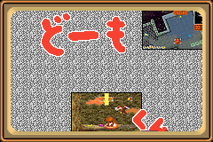
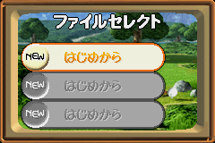

Domo-kun no Fushigi Television (Japan)
Stateless / Passcode 📺 Joybus 💾 MultiBoot
Cartridge Identity
- Game Code
ADOJ(FamilyADO)- Header Title
DOMOKUN- Maker / Revision
01/ rev0- ROM Size
- 8.0 MiB (8,388,608 B)
- Save Media
None / Unknown- SHA-256
7badea062705226124ee9e04eb07b55730ac20c7c6a09c88f39632cf97814477- Engine / SDK Group
comm-064(2 families)
Screenshots


Link Cable & Multiplayer Communications
This title contains detected communication capabilities: 📺 Joybus 💾 MultiBoot.
Detailed protocol specifications, SIO registers, Joybus commands, and MultiBoot sequences are documented in the Link & Multiplayer Reference.
- GameCube Joybus
- Register literal
REG_JOYCNT(0x04000140) at offset0x4db108 - Single-Cart MultiBoot
- Single-Cartridge MultiBoot (Download Play) client/server handler · Thumb SWI 0x25 (
0xDF25):0x0ffa36,0x1bef1e,0x1e42dc,0x20ba68
Cartridge Storage Architecture: Stateless / Passcode
Zero non-volatile battery hardware: This cartridge PCB contains ROM only (no SRAM, Flash, or EEPROM chips). Progression is preserved via on-screen passcodes or session-only gameplay. No
.sav file is generated or required.
ROM Assets, Compression & Audio
- BIOS Compression
- LZ77 (
0x10): 1,407 streams · RLE (0x30): 3 streams - ROM Pointer Tables
- 163 tables (19 pointing to validated compressed streams)
- SDK Backup Tags
SRAM_V112
Asset Map (formatkit.asset-map.v1)
Download ADOJ-r0-7badea0627052261.asset-map.json.gz (298,198 B (291.2 KiB)) Verified PASS · 63.80% coverage
| Metric | Bytes / Value | Entries |
|---|---|---|
| Identified | 5,172,652 B (4.93 MiB) (61.66%) | 2,861 |
| Mapped | 0 B (0.00%) | 0 |
| Opaque | 179,672 B (175.5 KiB) (2.14%) | 1 |
| Unknown | 3,036,284 B (2.90 MiB) (36.20%) | 2,424 |
| Total ROM Size | 8,388,608 B (8.00 MiB) | 5,286 |
| Coverage % | 63.80% | — |
| Entries w/ Code Refs | 2,993 / 5,286 (56.62%) | — |
Top Identified Formats: compress.bios-lz77 (1,372 · 4,959,618 B (4.73 MiB)) · gfx.gba-palette (1,483 · 204,416 B (199.6 KiB)) · audio.m4a-song-table (1 · 7,992 B (7.8 KiB)) · compress.bios-rle (4 · 434 B) · gba.rom-header (1 · 192 B)
Largest unknown Extents (Headerless / Custom Asset Candidates)
| Offset | Size | Shannon Entropy | Code Refs |
|---|---|---|---|
0x00786BD8 | 317,008 B (309.6 KiB) | 5.653 bits/B | 1 |
0x00108330 | 184,992 B (180.7 KiB) | 7.089 bits/B | 0 |
0x0049B100 | 162,648 B (158.8 KiB) | 1.821 bits/B | 0 |
0x00136CC8 | 115,232 B (112.5 KiB) | 6.679 bits/B | 0 |
0x002E2720 | 80,800 B (78.9 KiB) | 6.561 bits/B | 0 |
gzip -dk ADOJ-r0-7badea0627052261.asset-map.json.gz && gbakit map verify rom.gba ADOJ-r0-7badea0627052261.asset-map.json
gbakit assets export rom.gba --asset-map ADOJ-r0-7badea0627052261.asset-map.json -o out/Text, Fonts & Scene Data
- Primary Text Encoding
- Shift-JIS (uncompressed) (
200Shift-JIS runs) - Font & VWF Indicators
- VWF Width Table 1bpp Font · BIOS SWIs: BitUnPack
0x10:8· LZ770x11/12:9· Huffman0x13:2· RLE0x14/15:11 - Scene & Packaging
64ROM pointer tables (≥32 entries,6≥200) ·9relativeu32TOCs ·187OAM metasprite hits
Hardware MMIO Subsystems
ppu_display0x8053610